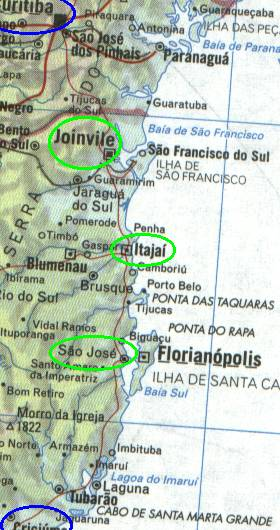

← anterior | principal | próxima →

Todo esse trecho fizemos de noite e no gás. Nada aqui era novidade porque descer pro litoral de santa catarina é normal.
Pra variar tinha acidente com morte na estrada, engarrafamento e manés que vêm pelo acostamento.
Chegamos em Curitiba 1 e meia da manhã, podres, cansados, mas satisfeitos.